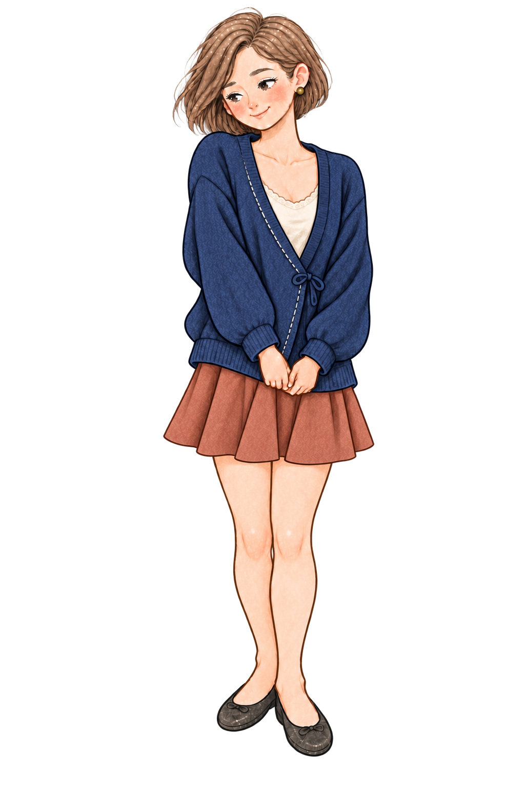
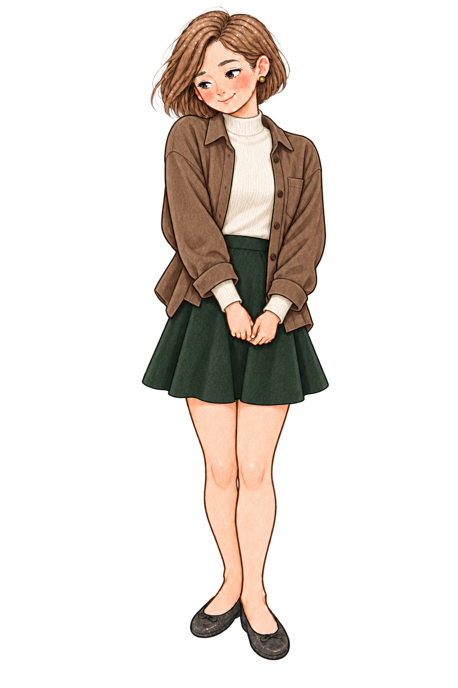
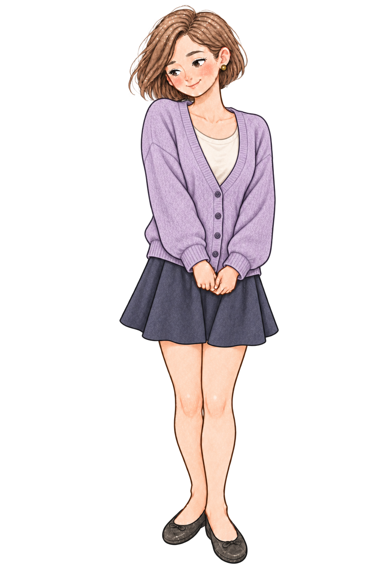

Original · native base
Everyday sage
The selected v6 character. The app’s current 8 expressions and 4 body references use this outfit.
Rue v6 is now in local iOS and Android builds. Three new adult wardrobe ideas below—concepts only, not in-app items.
These looks are separate concept PNGs; no outfit selection, rewards, prices, transactions, Play edits, or release has been enabled. All four PNGs have alpha but retain colored glow; the concepts need matching state art and cutout QA.
The selected v6 character. The app’s current 8 expressions and 4 body references use this outfit.

Deep blue knit with a warm terracotta hem. Outfit swap study; not a purchased or earned item.

Oat knit, soft brown overshirt and pine-green skirt. Clothing, not a school uniform.

Relaxed lavender cardigan and charcoal-indigo skirt; another adult wardrobe direction.
Each future wearable needs a consistent Rue silhouette across expressions, an accessible preview, clean transparent art and a fallback to the free base look. Earning must respect intentional use; purchases need real store products, receipt verification, restores, refunds and customer consent before activation.